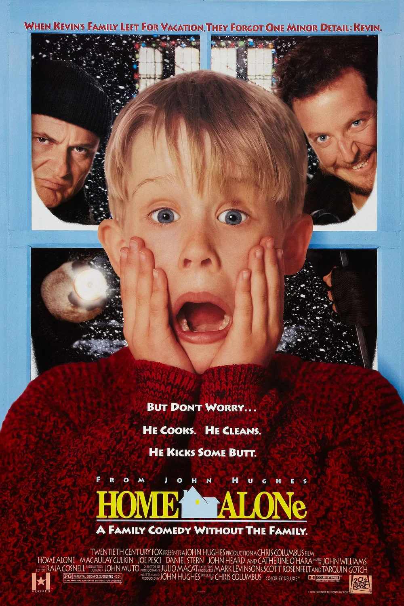

Kevin McCallister, un bambino di otto anni, viene accidentalmente lasciato a casa da solo quando la sua famiglia parte per le vacanze di Natale. Inizialmente felice di avere la casa tutta per sé, Kevin deve presto difendersi da due ladri goffi che cercano di svaligiare la casa, usando astuzia e trappole ingegnose per proteggere la propria dimora.
Regia: Chris Columbus
Cast: Macaulay Culkin, Joe Pesci, Daniel Stern